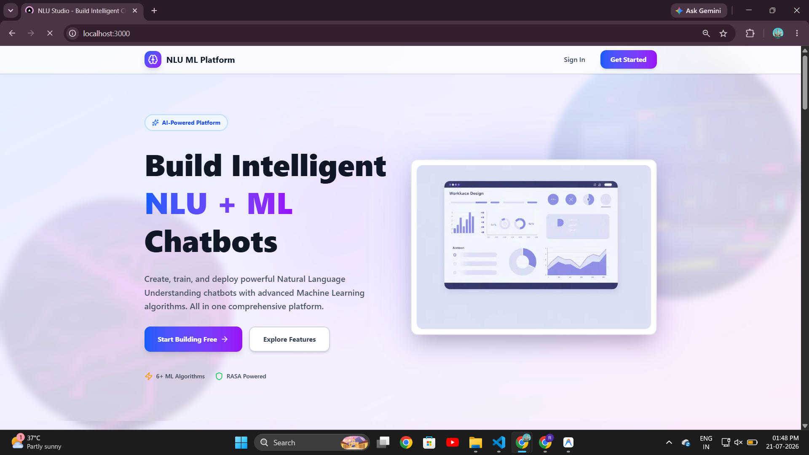
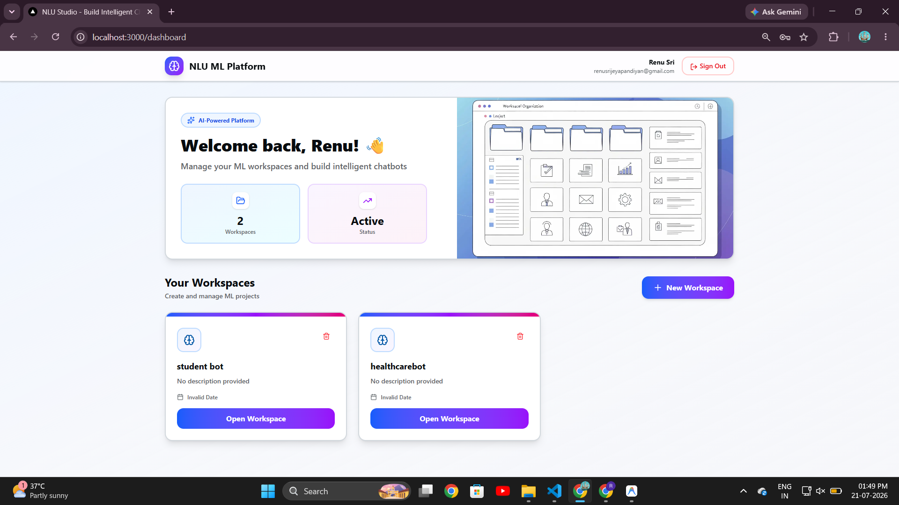
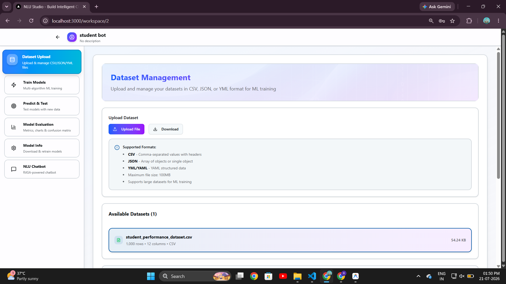
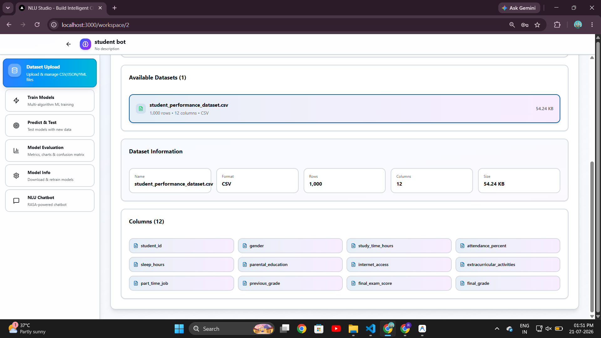
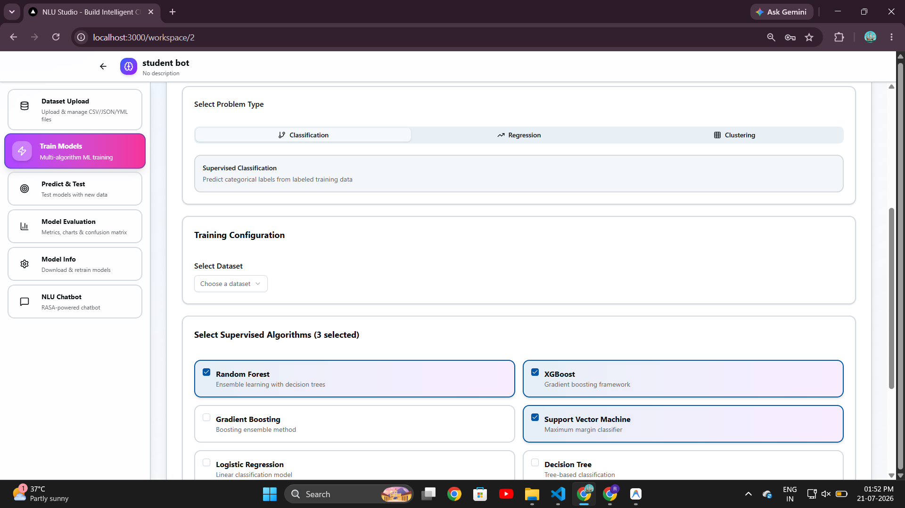
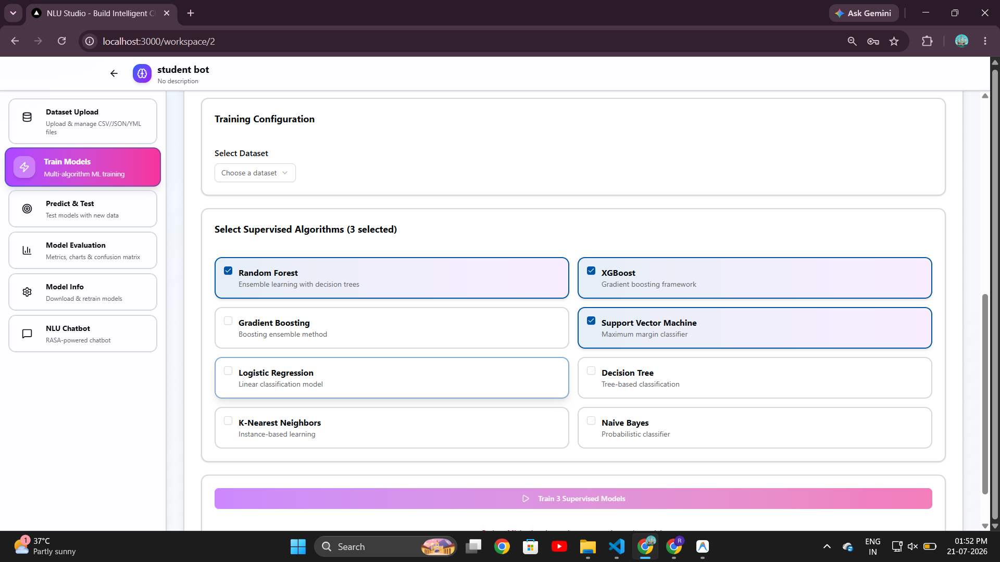
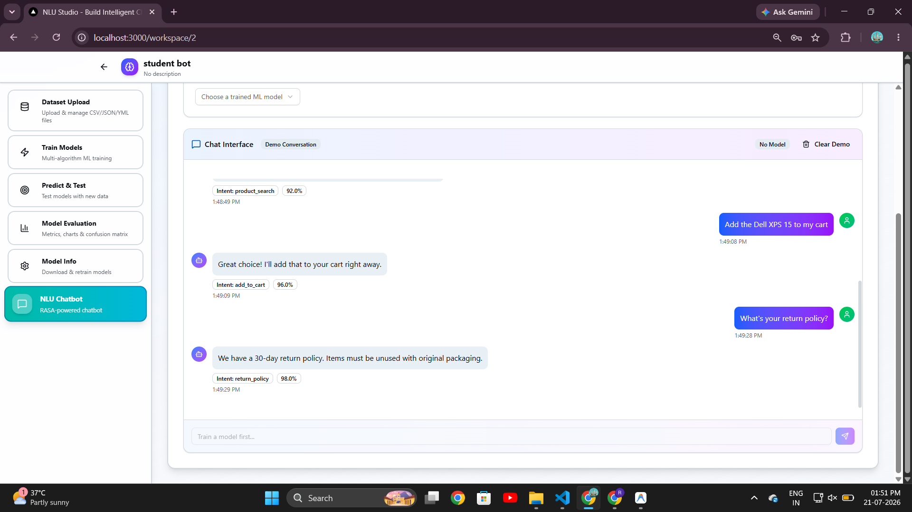

An NLU + ML platform for building intelligent chatbots — create workspaces, upload a training dataset, train several classification algorithms side by side, and chat with the trained model to see live intent detection.
⏳ Hosted on Render's free tier — the first load after inactivity can take 30–60 seconds to spin up.







Training and testing a natural-language-understanding model usually means juggling notebooks, scripts, and separate dashboards. BotTrainer pulls that workflow into a single interactive web app, so queries can be entered, labelled, and evaluated in one place.
Designed and built the full stack solo — the Next.js/React front-end, the workspace and dataset data model, the training pipeline that fans a single request out to multiple scikit-learn-style classifiers, and the RASA integration that powers the live chatbot. I also handled deployment to Render.
Coordinating multiple algorithm training runs from one UI action without blocking the interface pushed me to think more carefully about async job handling on the backend. I also learned to profile datasets client-side before upload, which cut down on failed training runs caused by malformed data — a small change that meaningfully improved the user experience.